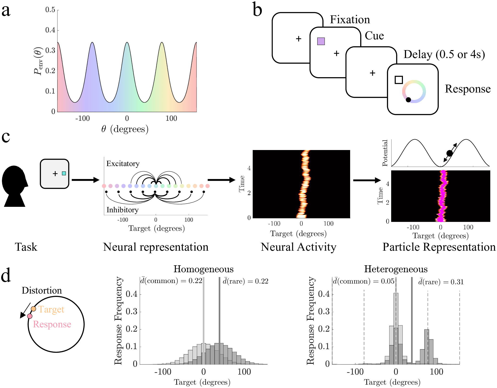

Research
Our group develops mathematical models of cognition and collective behavior, linking stochastic neural dynamics, Bayesian inference, and adaptive decision making.

DECISION MAKING
Decision making and Bayesian inference
When the world changes, old information can become misleading. I study how decision makers balance incoming evidence, prior experience, and the possibility of change.
Questions include when to stop gathering evidence, how to learn environmental change rates, and when seeking information is more valuable than chasing a reward.
Evidence-accumulation simulationRead: Normative decision rules in changing environments

COLLECTIVE BEHAVIOR
Collective behavior and foraging
How can a group adapt without a central coordinator? My work studies social evidence, differences among individuals, and the dynamics of foraging collectives.
Models help reveal how recruitment, inhibition, and individual decision rules influence the behavior of the whole group.
Patch-foraging demonstrationRead: Heterogeneity improves speed and accuracy in social networks

NEURAL DYNAMICS
Neural dynamics and working memory
Neural activity can persist after a stimulus disappears. I study how these patterns encode information, drift under noise, and interact with the structure of a network.
Working-memory errors offer a window into these dynamics—and into the way experience shapes our expectations.
Bump-attractor simulationFROM THE PAPER
Working memory and neural attractors
This figure links a delayed-estimation task to persistent neural activity and a reduced model of a wandering memory.
Eissa & Kilpatrick, PLOS Computational Biology (2023)